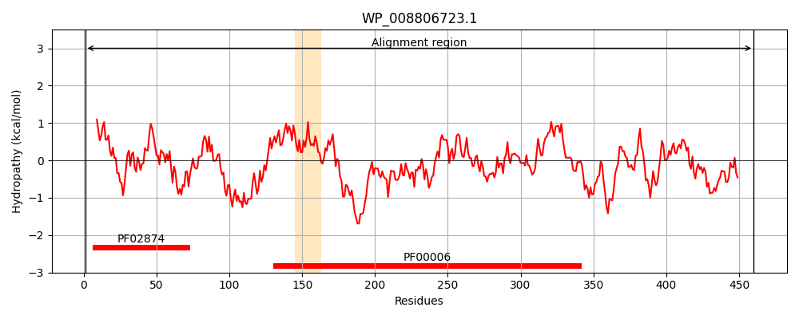
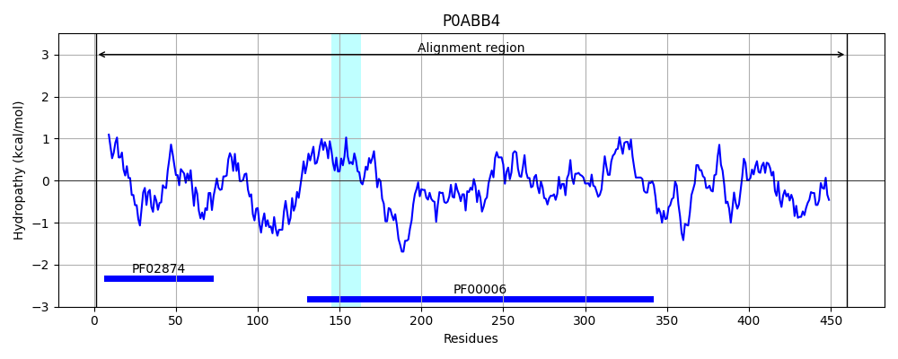
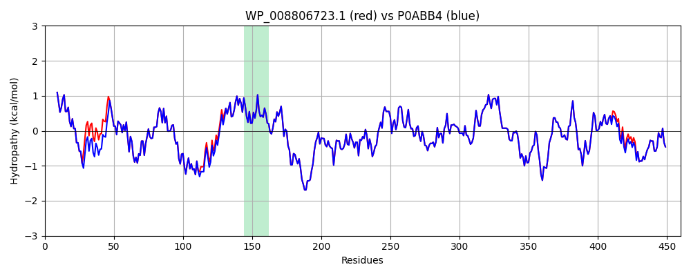

Hit Accession: P0ABB4
Hit TCID: 3.A.2.1.1
Hit Description: gnl|BL_ORD_ID|8699 gnl|TC-DB|P0ABB4|3.A.2.1.1 ATP synthase subunit beta - Escherichia coli.
Mach Len: 460
e:0.000000
Query TMS Count : 1
Hit TMS Count: 1
TMS-Overlap Score: 0.950000
Predicted Substrates:CHEBI:5584;hydron
BLAST Alignment:
Score: 2284 , Bit scores: 884 bits, E-value: 0.0e+00, Alignment length: 460, Percentage identity: 98
Query: 1 MATGKIVQVIGAVVDVEFPQDAVPRVYEALEVQNGKEVLVLEVQQQLGGGIVRTIAMGSSDGLRRGLEVKDLEHPIEVPVGKATLGRIMNVLGQPVDMKGDIGEEERWAIHRAAPSYEELSSSQELLETGIKVIDLMCPFAKGGKVGLFGGAGVGKTVNMMELIRNIAIEHSGYSVFAGVGERTREGNDFYHEMTDSNVIDKVSLVYGQMNEPPGNRLRVALTGLTMAEKFRDEGRDVLLFVDNIYRYTLAGTEVSALLGRMPSAVGYQPTLAEEMGVLQERITSTKTGSITSVQAVYVPADDLTDPSPATTFAHLDATVVLSRQIASLGIYPAVDPLDSTSRQLDPLVVGQEHYDTARGVQSILQRYQELKDIIAILGMDELSEEDKLVVARARKIQRFLSQPFFVAEVFTGSPGKYVALKDTIRGFKGIMEGEYDHLPEQAFYMVGSIDEAVEKAKKL 460
MATGKIVQVIGAVVDVEFPQDAVPRVY+ALEVQNG E LVLEVQQQLGGGIVRTIAMGSSDGLRRGL+VKDLEHPIEVPVGKATLGRIMNVLG+PVDMKG+IGEEERWAIHRAAPSYEELS+SQELLETGIKVIDLMCPFAKGGKVGLFGGAGVGKTVNMMELIRNIAIEHSGYSVFAGVGERTREGNDFYHEMTDSNVIDKVSLVYGQMNEPPGNRLRVALTGLTMAEKFRDEGRDVLLFVDNIYRYTLAGTEVSALLGRMPSAVGYQPTLAEEMGVLQERITSTKTGSITSVQAVYVPADDLTDPSPATTFAHLDATVVLSRQIASLGIYPAVDPLDSTSRQLDPLVVGQEHYDTARGVQSILQRYQELKDIIAILGMDELSEEDKLVVARARKIQRFLSQPFFVAEVFTGSPGKYV+LKDTIRGFKGIMEGEYDHLPEQAFYMVGSI+EAVEKAKKL
Sbjct: 1 MATGKIVQVIGAVVDVEFPQDAVPRVYDALEVQNGNERLVLEVQQQLGGGIVRTIAMGSSDGLRRGLDVKDLEHPIEVPVGKATLGRIMNVLGEPVDMKGEIGEEERWAIHRAAPSYEELSNSQELLETGIKVIDLMCPFAKGGKVGLFGGAGVGKTVNMMELIRNIAIEHSGYSVFAGVGERTREGNDFYHEMTDSNVIDKVSLVYGQMNEPPGNRLRVALTGLTMAEKFRDEGRDVLLFVDNIYRYTLAGTEVSALLGRMPSAVGYQPTLAEEMGVLQERITSTKTGSITSVQAVYVPADDLTDPSPATTFAHLDATVVLSRQIASLGIYPAVDPLDSTSRQLDPLVVGQEHYDTARGVQSILQRYQELKDIIAILGMDELSEEDKLVVARARKIQRFLSQPFFVAEVFTGSPGKYVSLKDTIRGFKGIMEGEYDHLPEQAFYMVGSIEEAVEKAKKL 460 | Protein Hydropathy Plots: |
|---|
|  |  |
Pairwise Alignment-Hydropathy Plot:
|
|---|
|  |